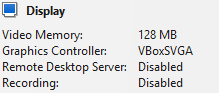
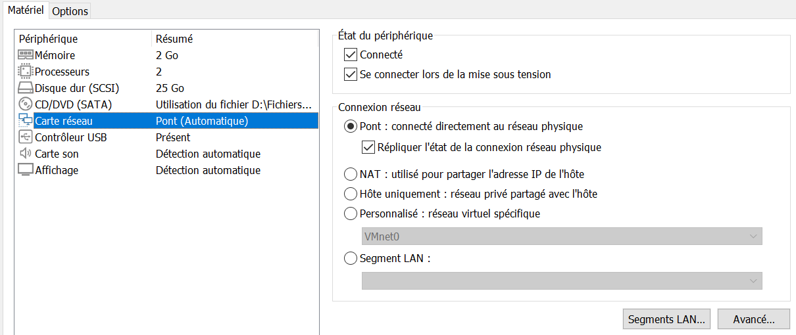

Système d’exploitation hôte
Nous avons choisi d’utiliser comme système d’exploitation hôte Windows. Ce système a été retenu car il est largement répandu et compatible avec les principaux outils de virtualisation, notamment Oracle VirtualBox.
Nous avons choisi d’utiliser comme système d’exploitation hôte Windows. Ce système a été retenu car il est largement répandu et compatible avec les principaux outils de virtualisation, notamment Oracle VirtualBox.
L’outil de virtualisation choisi est Oracle VirtualBox.
Pourquoi?
Parce que c'est une VM gratuite, open-source et très intéressante pour un usage pédagogique.
Le système d’exploitation installé sur la machine virtuelle est Linux , plus précisément Ubuntu. Ce choix s’explique par le fait qu’Ubuntu est stable, open-source et peu gourmand en ressources, ce qui le rend idéal pour la virtualisation.

La mémoire vidéo a été réglée à 128 MB, la valeur maximale proposée par VirtualBox, avec le contrôleur graphique VBoxSVGA.
Ce choix permet un affichage fluide de l’interface graphique d’Ubuntu, notamment pour l’environnement de bureau, tout en garantissant une bonne compatibilité avec le système Linux.
Les options « Remote Desktop Server » et « Recording » ont été désactivées. Cela permet d'augmenter la rapidité de la VM.
Afin de permettre le déploiement et l’accessibilité de notre site web Nginx sur le réseau local, la carte réseau de la machine virtuelle a été configurée en mode Pont (Bridged) dans VMware. Ce mode permet à la machine virtuelle d’être directement connectée au réseau physique de l’ordinateur hôte, comme un ordinateur indépendant.
Grâce à ce paramétrage, la machine virtuelle obtient sa propre adresse IP auprès du routeur ou de la box internet. Cela rend le site accessible depuis n’importe quel autre appareil connecté au même réseau local (ordinateur, smartphone ou tablette) en saisissant cette adresse IP dans un navigateur web.
L’option « Répliquer l’état de la connexion réseau physique » a également été activée. Ce choix permet à la machine virtuelle de conserver une connexion stable en suivant automatiquement les changements de connexion de l’hôte, comme le passage du Wi-Fi à une connexion filaire.
Enfin, le paramètre « Se connecter lors de la mise sous tension » a été activé afin de garantir que la carte réseau est opérationnelle dès le démarrage de la machine virtuelle. Cela permet au serveur Nginx d’être immédiatement accessible sur le réseau local, facilitant ainsi les phases de test et de démonstration.
